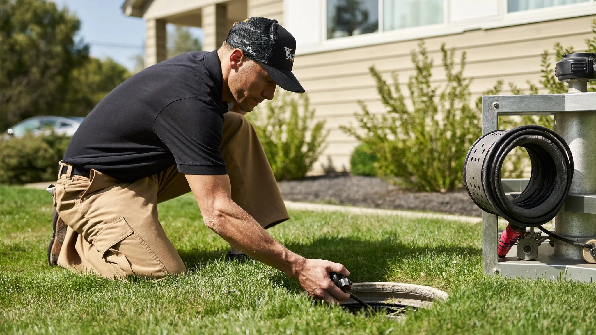

385.853.8116


Sunny Home Services’ sewer line repair along the Wasatch Front fixes the buried pipe that carries waste away from your home, before a cracked or root-invaded line turns into a backup or a sinkhole in the yard. Along the Wasatch Front, sewer lines fail for specific reasons: mature tree roots hunt for water in older neighborhoods, and shifting clay soils crack and offset aging pipe.
When a sewer line fails, ignoring it only makes the damage and the cost grow. Whether you're near Jordan Landing, Oquirrh, or the older streets by Gardner Village, professional sewer line repair restores proper flow and protects your home’s foundation and landscaping.

Sunny Home Services’ plumbers are licensed, background-checked, and experienced in diagnosing and repairing sewer lines under real Wasatch Front conditions, where the soil and trees put buried pipe under constant pressure.
Along the Wasatch Front, that means a few very specific stress factors:
Because we repair sewer lines under these conditions every day, we understand how Wasatch Front homes are plumbed, how the local soil behaves, and where lines tend to fail.
If you’re searching “sewer line repair near me”, with Sunny Home Services you’re getting a local team that confirms the exact problem with a camera before digging, then repairs the root cause. That means a repair that holds instead of another backup next season.
Sewer line repair along the Wasatch Front usually comes down to a few recurring failures driven by soil, trees, and the age of the pipe.
Utah’s heavy clay soils and mature landscaping create conditions that crack and block buried lines. Other local factors add up too: ground movement stresses joints, hard water narrows the pipe, and decades of use wear down older clay and cast iron sewer lines.
Sunny Home Services’ plumbers are frequently called out to repair:
Along the Wasatch Front specifically, we see sewer failures tied to both newer and older homes:
Across the Salt Lake Valley, a camera inspection is the first step in any sewer repair, so we fix the exact damaged section instead of guessing.

Knowing whether to repair one section of your Wasatch Front sewer line or replace the whole thing comes down to the condition of the pipe, how many spots are failing, and what the camera inspection shows underground.
A single crack or root intrusion in otherwise sound pipe is usually a targeted repair. When damage runs the length of the line, or the pipe is old clay or cast iron failing in multiple places, full replacement is often the more cost-effective and lasting fix.
Choosing a sewer repair company means finding a team that diagnoses accurately before digging and stands behind the fix. Sunny Home Services delivers the responsiveness of a large company with the accountability of a local business.
We deliver:
Along the Wasatch Front, a failing sewer line can back up into the home or undermine the yard fast. Accurate diagnosis and a proper repair protect your property and your budget.
Unlike many sewer repair companies, we prioritize communication. You know who’s coming, when they’ll arrive, and exactly what work’s being done, no surprises.
Calling Sunny Home Services for sewer line repair means same-day response with clear communication and fast action from the first interaction.
Here’s what happens:
Many sewer repairs can be completed with trenchless methods that avoid tearing up the yard, and our crews come prepared to handle the diagnosis and repair with as little disruption as possible.

The offers from our door hanger, redeemable when you book. Mention them when you call.

If your sewer keeps backing up or you’ve spotted a soggy patch in the yard, don’t wait for a full collapse. Call now or book online to have your line inspected and repaired before it gets worse, fast!